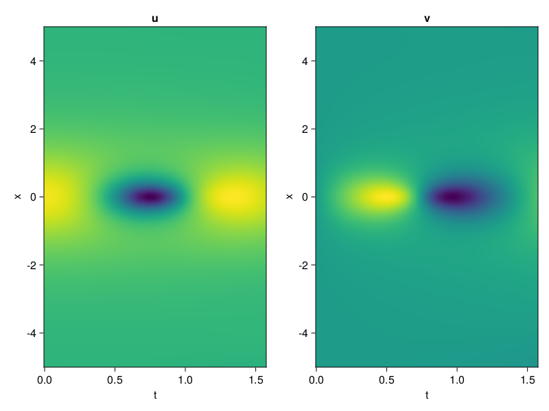
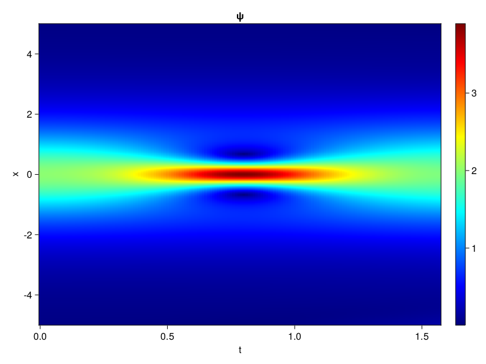
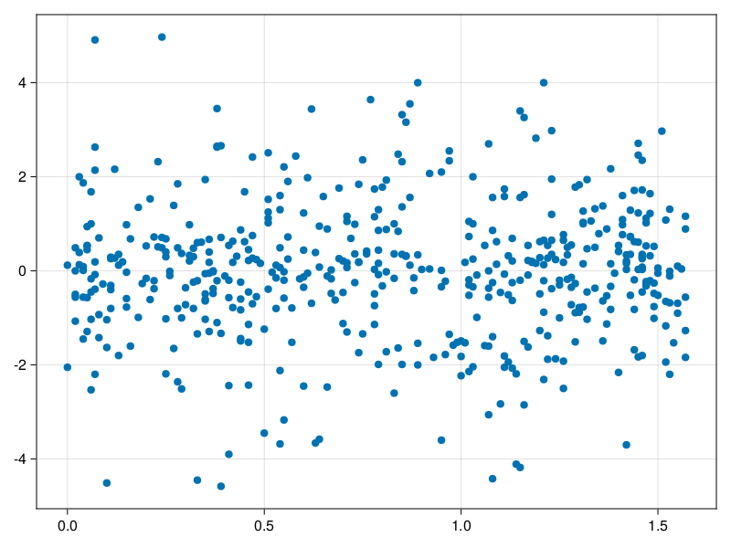

Schrödinger equation
The nonlinear Shrödinger equation is given by
\[\mathrm{i} \partial_t \psi=-\frac{1}{2} \sigma \partial_{x x} \psi-\beta|\psi|^2 \psi\]
Let $\sigma=\beta=1, \psi=u+v i$, the equation can be transformed into a system of partial differential equations
using ModelingToolkit, IntervalSets, Sophon, CairoMakie
using Optimization, OptimizationOptimJL
@parameters x,t
@variables u(..), v(..)
Dₜ = Differential(t)
Dₓ² = Differential(x)^2
eqs=[Dₜ(u(x,t)) ~ -Dₓ²(v(x,t))/2 - (abs2(v(x,t)) + abs2(u(x,t))) * v(x,t),
Dₜ(v(x,t)) ~ Dₓ²(u(x,t))/2 + (abs2(v(x,t)) + abs2(u(x,t))) * u(x,t)]
bcs = [u(x, 0.0) ~ 2sech(x),
v(x, 0.0) ~ 0.0,
u(-5.0, t) ~ u(5.0, t),
v(-5.0, t) ~ v(5.0, t)]
domains = [x ∈ Interval(-5.0, 5.0),
t ∈ Interval(0.0, π/2)]
@named pde_system = PDESystem(eqs, bcs, domains, [x,t], [u(x,t),v(x,t)])\[ \begin{align} \frac{\mathrm{d}}{\mathrm{d}t} u\left( x, t \right) =& - \frac{1}{2} \frac{\mathrm{d}}{\mathrm{d}x} \frac{\mathrm{d}}{\mathrm{d}x} v\left( x, t \right) - \left( \left|u\left( x, t \right)\right|^{2} + \left|v\left( x, t \right)\right|^{2} \right) v\left( x, t \right) \\ \frac{\mathrm{d}}{\mathrm{d}t} v\left( x, t \right) =& \frac{1}{2} \frac{\mathrm{d}}{\mathrm{d}x} \frac{\mathrm{d}}{\mathrm{d}x} u\left( x, t \right) + \left( \left|u\left( x, t \right)\right|^{2} + \left|v\left( x, t \right)\right|^{2} \right) u\left( x, t \right) \end{align} \]
pinn = PINN(u = Siren(2,1; hidden_dims=16,num_layers=4, omega = 1.0),
v = Siren(2,1; hidden_dims=16,num_layers=4, omega = 1.0))
sampler = QuasiRandomSampler(500, (200,200,20,20))
strategy = NonAdaptiveTraining(1,(10,10,1,1))
prob = Sophon.discretize(pde_system, pinn, sampler, strategy)OptimizationProblem. In-place: true
u0: ComponentVector{Float64}(u = (layer_1 = (weight = [0.16213345527648926 -0.022695183753967285; -0.28492724895477295 -0.34716588258743286; … ; -0.007300913333892822 -0.3157687187194824; 0.40102386474609375 0.16457122564315796], bias = [0.0; 0.0; … ; 0.0; 0.0;;]), layer_2 = (weight = [0.12971651554107666 0.17857764661312103 … -0.24294514954090118 -0.48239263892173767; 0.32915011048316956 0.4246041476726532 … 0.3729814887046814 0.00985630601644516; … ; -0.28826653957366943 -0.47823458909988403 … 0.16315855085849762 0.43937820196151733; -0.49011579155921936 -0.38536742329597473 … 0.19732357561588287 -0.5235115885734558], bias = [0.0; 0.0; … ; 0.0; 0.0;;]), layer_3 = (weight = [0.5703656077384949 0.19418805837631226 … 0.007146089803427458 -0.5655691623687744; -0.17905499041080475 -0.1354430466890335 … -0.16963952779769897 -0.26825186610221863; … ; 0.06254652142524719 0.006403747946023941 … 0.5506535768508911 0.1306142807006836; 0.4951055943965912 0.24576830863952637 … -0.4413587152957916 -0.11488771438598633], bias = [0.0; 0.0; … ; 0.0; 0.0;;]), layer_4 = (weight = [0.17464780807495117 0.24485565721988678 … -0.5992165207862854 0.5892198085784912; 0.17460525035858154 0.03211568295955658 … 0.46955373883247375 -0.34181007742881775; … ; -0.200088769197464 0.30825358629226685 … -0.45035651326179504 -0.4390869140625; 0.5715158581733704 0.16002273559570312 … -0.4205823242664337 -0.5107768177986145], bias = [0.0; 0.0; … ; 0.0; 0.0;;]), layer_5 = (weight = [-0.02326298877596855 0.487908273935318 … -0.39770960807800293 0.5890968441963196], bias = [0.0;;])), v = (layer_1 = (weight = [-0.43619704246520996 0.2340521216392517; -0.19129133224487305 -0.20658212900161743; … ; -0.05763763189315796 -0.0856279730796814; 0.41816943883895874 -0.42640256881713867], bias = [0.0; 0.0; … ; 0.0; 0.0;;]), layer_2 = (weight = [0.585098385810852 0.44684621691703796 … -0.16098766028881073 -0.5384522080421448; 0.6073676347732544 0.571313738822937 … 0.015647726133465767 -0.163300022482872; … ; 0.26220282912254333 0.2972116768360138 … -0.14626535773277283 0.13570475578308105; 0.06953609734773636 0.4274210035800934 … 0.10773418098688126 -0.05244310572743416], bias = [0.0; 0.0; … ; 0.0; 0.0;;]), layer_3 = (weight = [-0.04232560470700264 -0.13482122123241425 … -0.11955514550209045 0.0634559616446495; -0.531659722328186 -0.3291560113430023 … -0.19841055572032928 -0.5573629140853882; … ; -0.2021009474992752 0.4160383343696594 … 0.2976806163787842 -0.07292813807725906; 0.3727666437625885 -0.2834991216659546 … 0.1877700835466385 0.3850124776363373], bias = [0.0; 0.0; … ; 0.0; 0.0;;]), layer_4 = (weight = [-0.569473147392273 0.4879360795021057 … 0.09926021099090576 -0.6038022637367249; -0.1434309035539627 0.35381054878234863 … -0.2898649573326111 0.5298752784729004; … ; 0.36078399419784546 -0.5105856657028198 … 0.5255083441734314 -0.07200030237436295; -0.15386201441287994 0.09212178736925125 … -0.0023518563248217106 0.2775183320045471], bias = [0.0; 0.0; … ; 0.0; 0.0;;]), layer_5 = (weight = [0.33198434114456177 -0.35475093126296997 … -0.10853791236877441 -0.12052057683467865], bias = [0.0;;])))Now we train the neural nets and resample data while training.
function train(pde_system, prob, sampler, strategy, resample_period = 500, n=10)
bfgs = BFGS()
res = Optimization.solve(prob, bfgs; maxiters=2000)
for i in 1:n
data = Sophon.sample(pde_system, sampler)
prob = remake(prob; u0=res.u, p=data)
res = Optimization.solve(prob, bfgs; maxiters=resample_period)
end
return res
end
res = train(pde_system, prob, sampler, strategy)u: ComponentVector{Float64}(u = (layer_1 = (weight = [0.1452153270945461 -0.1161450198994809; -0.46566553545329187 -0.1323278891860796; … ; 0.1782949654084154 -0.2738797591472777; 0.3092330634224189 -0.46540966435293424], bias = [0.237912975073966; -0.06631508368105067; … ; 0.03768344291257441; 0.05530612789516447;;]), layer_2 = (weight = [0.15875826716516778 -0.03876378063885069 … -0.11090453601817649 -0.5753101378772393; 0.22474406867105237 0.4009128754881556 … 0.22973277403848158 0.16864719454054755; … ; -0.4079714309139061 -0.484656007297989 … -0.05295971065347072 0.2501896298736299; -0.4263170264697436 -0.2705369814171539 … 0.3812239521559088 -0.7080605190467298], bias = [-0.24552598378185272; 0.03531729866988527; … ; 0.024473918868008603; -0.2429165158590667;;]), layer_3 = (weight = [0.6595627635052314 0.15142095901908184 … -0.05993110098888033 -0.6182121255139759; -0.28436681911567585 -0.2667845668082574 … -0.04212606215919621 -0.08435738013629528; … ; 0.31919519778157623 -0.10048756182006144 … 0.29208681735479186 0.41383673140157534; 0.2770097833603293 0.09184700393991937 … -0.44112515913408185 -0.1599257312584087], bias = [-0.03435706164566024; 0.10737907269214292; … ; -0.3024417171355776; -0.10228548395286553;;]), layer_4 = (weight = [0.4456301170420087 0.6320974775131435 … -0.6312311437462163 0.9098306947161506; 0.3161751269353706 0.06592433612608951 … 0.275935415242617 -0.28570101203009135; … ; -0.38891802762642924 0.23731586975481567 … -0.4991493834871924 -0.3288314772517642; 0.9768540700670967 0.61004553745566 … -0.4130888280485767 0.11488213658616385], bias = [-0.04644265716892369; 0.23244444388544538; … ; 0.3235560333391905; 0.4944419533505313;;]), layer_5 = (weight = [-0.2099898132150879 0.3971227295133047 … -1.2566807298782643 0.6002405111675785], bias = [0.3102402106483545;;])), v = (layer_1 = (weight = [-1.406074973659716 0.08588723354613718; -0.5039907183038437 -0.21838248887035946; … ; 0.44592656064169167 -0.10900363510671128; 0.9011014628214638 -0.574753136959175], bias = [-0.008188556935255638; 0.28727158947168835; … ; 0.04849693339334928; 0.2586446890931808;;]), layer_2 = (weight = [0.7463166739570731 0.9480571832801039 … -0.1648815565455619 -0.04437553134249405; 0.25965517320615494 0.6984390007913326 … 0.08223666013435828 0.087462481150046; … ; 0.39682431202175633 0.29230664380082694 … -0.21904337109719987 0.08567352086728038; 0.09837660067597576 0.45779778072932503 … 0.15071017967089678 0.051035240874220414], bias = [0.02749026968041907; 0.20341527897419542; … ; -0.07066868038114428; -0.024555410887879124;;]), layer_3 = (weight = [-0.04559724911003151 -0.02938803916238602 … -0.09764898971256426 -0.29566931087971465; -0.1819635333788766 -0.2098560082911273 … -0.15917563958469 0.050301917147567904; … ; 0.3297213174429837 0.6585587633738232 … 0.4108214548236483 -0.17675230381534862; 0.5426083041466432 -0.3759894506504234 … 0.23578526194583613 0.553144977510079], bias = [0.20582992114126744; 0.7578590350014685; … ; -0.055056512390306865; 0.292629939067203;;]), layer_4 = (weight = [-0.502777299308392 0.17543462919713584 … 0.2019171647717366 -0.21972871863116883; -0.009261670021362321 0.3732720915498491 … 0.4062827385663722 0.7212153784342754; … ; 0.3335428807670085 -0.6302274934790222 … 0.4176883720424477 -0.09277957680105843; -0.11369373026915801 0.16942869464068636 … 0.3147858265805119 0.37685529121094175], bias = [-0.07379777093083602; -0.002863891382810539; … ; 0.21656148933866046; -0.47457952068235254;;]), layer_5 = (weight = [0.5146204253847175 -0.7840446681643007 … -0.3527450409950478 -0.2769189841715524], bias = [0.09320550861016663;;])))phi = pinn.phi
ps = res.u
xs, ts= [infimum(d.domain):0.01:supremum(d.domain) for d in pde_system.domain]
u = [sum(phi.u(([x,t]), ps.u)) for x in xs, t in ts]
v = [sum(phi.v(([x,t]), ps.v)) for x in xs, t in ts]
ψ = @. sqrt(u^2+ v^2)
axis = (xlabel="t", ylabel="x", title="u")
fig, ax1, hm1 = heatmap(ts, xs, u', axis=axis)
ax2, hm2= heatmap(fig[1, end+1], ts, xs, v', axis= merge(axis, (; title="v")))
display(fig)
axis = (xlabel="t", ylabel="x", title="ψ")
fig, ax1, hm1 = heatmap(ts, xs, ψ', axis=axis, colormap=:jet)
Colorbar(fig[:, end+1], hm1)
display(fig)
Customize Sampling
Bascially any sampling method is supportted. For example we can sample data according to the predicted solution.
using StatsBase
data = vec([[x, t] for x in xs, t in ts])
wv = vec(ψ)
new_data = wsample(data, wv, 500)
new_data = reduce(hcat, new_data)
fig, ax = scatter(new_data[2,:], new_data[1,:])
prob.p[1] = new_data
prob.p[2] = new_data
prob = remake(prob; u0 = res.u)
# res = Optimization.solve(prob, bfgs; maxiters=1000)OptimizationProblem. In-place: true
u0: ComponentVector{Float64}(u = (layer_1 = (weight = [0.1452153270945461 -0.1161450198994809; -0.46566553545329187 -0.1323278891860796; … ; 0.1782949654084154 -0.2738797591472777; 0.3092330634224189 -0.46540966435293424], bias = [0.237912975073966; -0.06631508368105067; … ; 0.03768344291257441; 0.05530612789516447;;]), layer_2 = (weight = [0.15875826716516778 -0.03876378063885069 … -0.11090453601817649 -0.5753101378772393; 0.22474406867105237 0.4009128754881556 … 0.22973277403848158 0.16864719454054755; … ; -0.4079714309139061 -0.484656007297989 … -0.05295971065347072 0.2501896298736299; -0.4263170264697436 -0.2705369814171539 … 0.3812239521559088 -0.7080605190467298], bias = [-0.24552598378185272; 0.03531729866988527; … ; 0.024473918868008603; -0.2429165158590667;;]), layer_3 = (weight = [0.6595627635052314 0.15142095901908184 … -0.05993110098888033 -0.6182121255139759; -0.28436681911567585 -0.2667845668082574 … -0.04212606215919621 -0.08435738013629528; … ; 0.31919519778157623 -0.10048756182006144 … 0.29208681735479186 0.41383673140157534; 0.2770097833603293 0.09184700393991937 … -0.44112515913408185 -0.1599257312584087], bias = [-0.03435706164566024; 0.10737907269214292; … ; -0.3024417171355776; -0.10228548395286553;;]), layer_4 = (weight = [0.4456301170420087 0.6320974775131435 … -0.6312311437462163 0.9098306947161506; 0.3161751269353706 0.06592433612608951 … 0.275935415242617 -0.28570101203009135; … ; -0.38891802762642924 0.23731586975481567 … -0.4991493834871924 -0.3288314772517642; 0.9768540700670967 0.61004553745566 … -0.4130888280485767 0.11488213658616385], bias = [-0.04644265716892369; 0.23244444388544538; … ; 0.3235560333391905; 0.4944419533505313;;]), layer_5 = (weight = [-0.2099898132150879 0.3971227295133047 … -1.2566807298782643 0.6002405111675785], bias = [0.3102402106483545;;])), v = (layer_1 = (weight = [-1.406074973659716 0.08588723354613718; -0.5039907183038437 -0.21838248887035946; … ; 0.44592656064169167 -0.10900363510671128; 0.9011014628214638 -0.574753136959175], bias = [-0.008188556935255638; 0.28727158947168835; … ; 0.04849693339334928; 0.2586446890931808;;]), layer_2 = (weight = [0.7463166739570731 0.9480571832801039 … -0.1648815565455619 -0.04437553134249405; 0.25965517320615494 0.6984390007913326 … 0.08223666013435828 0.087462481150046; … ; 0.39682431202175633 0.29230664380082694 … -0.21904337109719987 0.08567352086728038; 0.09837660067597576 0.45779778072932503 … 0.15071017967089678 0.051035240874220414], bias = [0.02749026968041907; 0.20341527897419542; … ; -0.07066868038114428; -0.024555410887879124;;]), layer_3 = (weight = [-0.04559724911003151 -0.02938803916238602 … -0.09764898971256426 -0.29566931087971465; -0.1819635333788766 -0.2098560082911273 … -0.15917563958469 0.050301917147567904; … ; 0.3297213174429837 0.6585587633738232 … 0.4108214548236483 -0.17675230381534862; 0.5426083041466432 -0.3759894506504234 … 0.23578526194583613 0.553144977510079], bias = [0.20582992114126744; 0.7578590350014685; … ; -0.055056512390306865; 0.292629939067203;;]), layer_4 = (weight = [-0.502777299308392 0.17543462919713584 … 0.2019171647717366 -0.21972871863116883; -0.009261670021362321 0.3732720915498491 … 0.4062827385663722 0.7212153784342754; … ; 0.3335428807670085 -0.6302274934790222 … 0.4176883720424477 -0.09277957680105843; -0.11369373026915801 0.16942869464068636 … 0.3147858265805119 0.37685529121094175], bias = [-0.07379777093083602; -0.002863891382810539; … ; 0.21656148933866046; -0.47457952068235254;;]), layer_5 = (weight = [0.5146204253847175 -0.7840446681643007 … -0.3527450409950478 -0.2769189841715524], bias = [0.09320550861016663;;])))